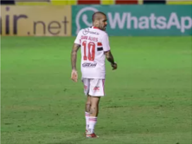

esporte
Ídolo do Corinthians
Irmão diz que Rincón está estável, mas prega cautela: 'Tem que esperar 72h'
- Rincón segue em estado crítico após acidente de carro, diz novo boletim
- O que sabemos sobre o acidente com o ex-jogador Rincón
as mais lidas do dia

Dani Alves critica diretoria e diz ter chegado ao limite no São Paulo

O que sabemos sobre o acidente com o ex-jogador Rincón
Palmeiras no SBT e Corinthians na ESPN: onde ver jogos da Libertadores